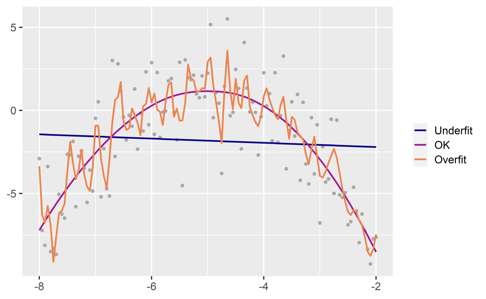
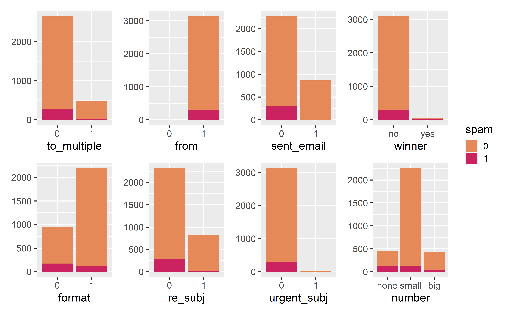

Prediction and overfitting
Data Science in a Box
layout: true
class: middle
Prediction
Goal: Building a spam filter
- Data: Set of emails and we know if each email is spam/not and other features
- Use logistic regression to predict the probability that an incoming email is spam
- Use model selection to pick the model with the best predictive performance
| - Building a model to predict the probability that an email is spam is only half of the battle! We also need a decision rule about which emails get flagged as spam (e.g. what probability should we use as out cutoff?) |
|---|
| - A simple approach: choose a single threshold probability and any email that exceeds that probability is flagged as spam |
A multiple regression approach
.panelset[ .panel[.panel-name[Output] .small[]] .panel[.panel-name[Code]]]
Prediction
- The mechanics of prediction is easy:
- Plug in values of predictors to the model equation
- Calculate the predicted value of the response variable, \(\hat{y}\)
| - Getting it right is hard! - There is no guarantee the model estimates you have are correct - Or that your model will perform as well with new data as it did with your sample data |
Underfitting and overfitting

Spending our data
Several steps to create a useful model: parameter estimation, model selection, performance assessment, etc.
Doing all of this on the entire data we have available can lead to overfitting
Allocate specific subsets of data for different tasks, as opposed to allocating the largest possible amount to the model parameter estimation only (which is what we’ve done so far)
class: middle
Splitting data
Splitting data
- Training set:
- Sandbox for model building
- Spend most of your time using the training set to develop the model
- Majority of the data (usually 80%)
- Testing set:
- Held in reserve to determine efficacy of one or two chosen models
- Critical to look at it once, otherwise it becomes part of the modeling process
- Remainder of the data (usually 20%)
Performing the split
# Fix random numbers by setting the seed
# Enables analysis to be reproducible when random numbers are used
set.seed(1116)
# Put 80% of the data into the training set
email_split <- initial_split(email, prop = 0.80)
# Create data frames for the two sets:
train_data <- training(email_split)
test_data <- testing(email_split)Peek at the split
.small[ .pull-left[] .pull-right[]]
class: middle
Modeling workflow
Fit a model to the training dataset
email_fit <- logistic_reg() %>%
set_engine("glm") %>%
fit(spam ~ ., data = train_data, family = "binomial")Warning: glm.fit: fitted probabilities numerically 0 or 1 occurredCategorical predictors

from and sent_email
.pull-left[ - from: Whether the message was listed as from anyone (this is usually set by default for regular outgoing email)] .pull-right[ - sent_email: Indicator for whether the sender had been sent an email in the last 30 days]
Numerical predictors
.small[]
Fit a model to the training dataset
email_fit <- logistic_reg() %>%
set_engine("glm") %>%
fit(spam ~ . - from - sent_email - viagra, data = train_data, family = "binomial") #<<Warning: glm.fit: fitted probabilities numerically 0 or 1 occurred.small[]
Predict outcome on the testing dataset
predict(email_fit, test_data)# A tibble: 785 x 1
.pred_class
<fct>
1 0
2 0
3 0
4 0
5 0
6 0
# ... with 779 more rowsPredict probabilities on the testing dataset
email_pred <- predict(email_fit, test_data, type = "prob") %>%
bind_cols(test_data %>% select(spam, time))
email_pred# A tibble: 785 x 4
.pred_0 .pred_1 spam time
<dbl> <dbl> <fct> <dttm>
1 0.993 0.00709 0 2012-01-01 11:55:06
2 0.998 0.00181 0 2012-01-01 13:38:32
3 0.981 0.0191 0 2012-01-01 23:42:16
4 0.999 0.00124 0 2012-01-02 09:12:51
5 0.988 0.0121 0 2012-01-02 10:45:36
6 0.830 0.170 0 2012-01-02 15:55:03
# ... with 779 more rowsA closer look at predictions
.pull-left-wide[]
Evaluate the performance
Receiver operating characteristic (ROC) curve+ which plot true positive rate vs. false positive rate (1 - specificity)
.pull-left[] .pull-right[]
.footnote[ .small[ +Originally developed for operators of military radar receivers, hence the name.]]
Evaluate the performance
Find the area under the curve:
.pull-left[] .pull-right[]